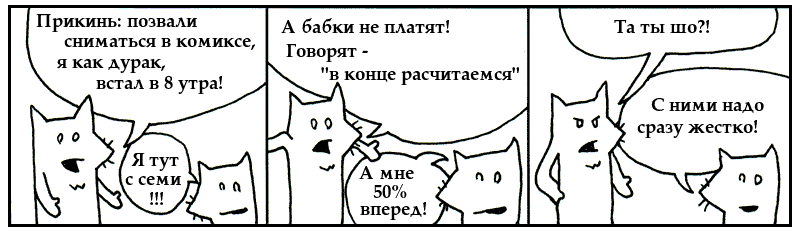
Как я и обещал, вот они, наши лисички (вообще–то, они мальчики). Ой черт, астма подступила, ща лекарственного газика пыхну и вернусь. Подожди буквально секундочку.
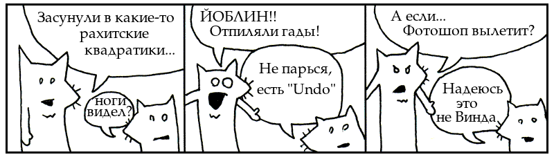
Мне тут сказали, что с этой главой надо полотенце в книгу вкладывать ;) Чтобы лицо вытирать от пота. Да уж действительно, нам с тобой предстоит экспресс-тур — весь язык в одной главе! Прямо не чтение, а соревнование по скоростному зажиганию спичек — весь коробок по одной спичке, с максимальной скоростью!
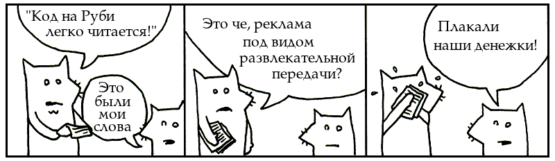
Некоторые люди говорят не «язык програмирования», а «компьютерный язык». Получается как будто язык удобный для компьютеров, и совершенной чужой для людей. Как будто мы какие–то иностранцы, и нам нужна виза и переводчик.
Вот я бы никогда не сказал «учу новый компьютерный язык — Руби», у меня бы просто язык не повернулся :)) Потому что Руби, в отличие от других языков программирования — это язык на котором можно думать, использовать его родные слова и выражения сразу, без перевода с человеского! Потому что Руби специально придуман чтобы программистам было удобно, даже если компьютеру прийдётся немного поднапрячься. Какой–же это тогда компьютерный язык? Это получается наш, человеческий язык. Язык удобный для людей.
5.times { print "ведмедик" }
# | |
# 5.раз напечатать(примечание переводчика: русские слова снизу, и линии соединяющие их с английскими, это конечно не часть программы. Это я добавил, чтобы легче читать было)
Как всегда, знаки препинания влух не читаются, они только помогают нам понять смысл предложения. Получается «пять раз напечатать ведмедик» — суперпросто и понятно. Вот такая маленькая, но настоящая, програмка пять раз печатает на экране смешное украинское слово «ведмедик» («мишка»).
exit unless "мишутка".include? "утка"
# | | |
# выйти если–не–правда–что содержитЗдесь мы делаем проверку, просто на всякий случай. Наша программа выйдет, если не правда, что слово «мишутка» содержит в себе слово «утка». Кстати, обрати внимание, как в Руби используются вопросительные знаки: сразу понятно, что мы задаем вопрос — содержит или нет?
['хлеб', 'сыр', 'колбаса'].each { |word| print word.capitalize }
# | | | |
# каждое слово напечатать с большой буквыЭто уже немного сложнее, но все ещё можно прочесть. Руби читается в сто раз легче других языков программирования, особенно если знать основные английские слова. Получается примерно так: «Взять хлеб, сыр, колбасу, и каждое слово напечатать с большой буквы». Комп послушно отвечает:
Хлеб
Сыр
КолбасаТут ты, наверное, думаешь: «Читать–то это можно, но как писать? Ведь это надо знать в каком порядке все эти слова ставить, что означают точки, чем отличаются квадратные скобки от фигурных и т.д.» Скоро, птичечка, мы и до этого дойдем, но сначала нам надо выучить части речи.
Итак, что мы пока выучили? Программа на Руби состоит из предложений (конечно не обычных английских предложений, но типа того). Каждое предложение состоит из слов и знаков препинания и выражает одну мысль. Из этих предложений можно составить повесть, рассказ, роман — то есть программу. Эту программу может запросто прочесть не только компьютер, но и другой человек.
Как отличить лису от невесты? Очень просто: у лисы — рыжий хвост, а у невесты — белая фата. Так и в Руби, разные части речи можно легко распознать по особым признакам — у одних в начале всегда стоит точка, другие всегда окружены скобками, третьи всегда начинаются с большой буквы. Ты только взглянешь на программу и сразу скажешь: «Ага, знакомая рожа! Ты то мне и нужен!». Названия тоже надо запомнить, чтобы было о чем говорить с другими Рубистами.
Чисто чтобы помочь тебе запомнить названия, я в двух словах объясню, для чего нужна каждая часть речи, но тебе это понимать не надо. Главное, постарайся запомнить, как они выглядят. Как они работают, мы потом разберемся, у нас ещё вся книга впереди. Сейчас нам нужно, чтобы к концу главы ты могла посмотреть на кусок Руби и опознать каждую часть речи.
Если ты видишь обычное слово, с маленькой буквы, безо всяких опознавательных знаков — это скорее всего переменная. Кроме маленьких букв, в них встречаются цифры и знаки подчеркивания. Например:
x
y
banana2
nado_pozvonit_mameПеременные, это как клички. Помнишь свою детскую кличку? Меня, например, называли «профессор Мавродаки», и когда кто–то говорил «Эй, профессор Мавродаки, иди сюда», все волшебным образом знали: профессор Мавродаки — это значит я.
Вот так и с переменными, если какая–то штука часто встречается в программе, бывает удобно дать ей кличку. Например, представь что ты работаешь в детском доме. И когда кто–то приходит усыновлять ребенка, но у него не хватает какой–нибудь справки, то он должен заплатить сто двадцать один доллар и восемь центов «за плюшевого мишку». (Нельзя же разлучать ребенка с любимой игрушкой, у него и так шок!)
И вот ты вводишь все платежи в бухгалтерскую программу (а она, понарошку, написана на Руби):
medved = 121.08
gos_poshlina = 4.22
notarius = 50.00
itogo = gos_poshlina + notarius + medvedКак видишь, переменные очень помогают. А детскому дому любая помощь пригодится!
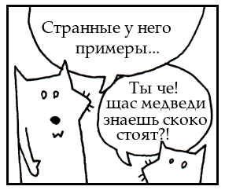
Число узнать легче всего, это просто последовательность цифр:
23В начале числа может стоять минус:
-10000Иногда очень большие числа разделяют на группы по три разряда (тысячи, миллионы, и т.д.). В Руби для этого используется знак подчёркивания:
naselenie = 12_000_000_000Для отделения дробной части от целой используют точку:
3.14
-808.08Строчка, это просто любая надпись в кавычках. Внутри могут быть русские и латинские буквы, цифры, знаки препинания, в общем любые символы. Можно использовать и двойные кавычки, и одинарные:
"laboratorka"
'2021'
"Прикольные картинки!!!"Кавычки как–бы соединяют все эти слова в одну цепочку, чтобы их можно было записать и достать все сразу. Это легче всего объяснить на примере. Одному журналисту дали задание: взять интервью у знаменитой певицы, например у Аврил Лавин. И вот он записывает примерно такой бред:
avril_skazala = "Я стала намного мудрее. Теперь я знаю как устроен шоу–
бизнес — что нужно делать и как это организовать."Помнишь, как мы записывали сумму взятки в переменную medved? Точно также, теперь мы записали строчку текста в переменную avril_skazala. И вот, готовый макет газеты идет в типографию, а в ней, понарошку, печатные станки работают на Руби:
print opra_skazala
print avril_skazala
print obama_skazal
# |
# печатать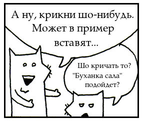
Символы всегда начинаются с двоеточия. После двоеточия могут идти буквы, цифры или подчёркивания — так же как в названиях переменных:
:a
:b
:ponce_de_leonВ основном, символы используются для передачи сигналов между разными местами программы (в других языках для этого используются «енумы»).
Если по простому, компьютеру легче переваривать символы чем строчки. Короче, символы — это как сода от изжоги. Двоеточие — это бульбочки у компьютера в желудке. Ням-ням! О–о–о–о, попустило!
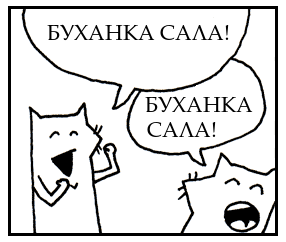
Константы всегда начинаются с большой буквы. В остальном они выглядят точно как переменные:
Time
Array
Y_popa_bila_sobakaЕсли обычная переменная это кличка, то константа — это имя собственное. Имя собственное всегда пишется с большой буквы. Например, ул. Крещатик — это имя собственное. Крещатик нельзя ни переименовать, ни перенести в другое место. Имя собственное используется для называния конкретного, вполне определённого предмета, и почти никогда не меняется.
Также и константа — её значение определяется в программе в одном месте, и нигде не меняется.
Main_street_of_Kiev = "Крещатик"Если мы попробуем назначить константу второй раз, Руби будет ругаться. Негодное это дело — переименовывать улицы.
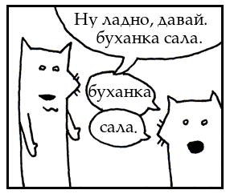
Если считать, что в Руби переменные и константы играют роль существительных, то методы соответствуют глаголам. Методы легко опознаются по точке, с помощью которой они прилепляются к переменной или константе. Мы их уже встречали, в примерах на чтение вслух.
door.open
# | |
# дверь открытьВ этом примере, door это переменная, а open — это метод, т.е. некое действие. Некоторые методы можно ставить подряд, один за другим:
door.open.close
# |
# закрытьПолучается, мы попросили компьютер открыть дверь, и сразу же закрыть. Ещё один пример:
door.is_open?
# |
# открыта?is_open? — это тоже действие, мы просим компьютер проверить, открыта ли дверь. Можно было бы его так и назвать — test_to_see_if_it_is_open, но is_open? даже лучше — коротко и ясно. Кстати, в названиях методов можно ставить не только знаки вопроса, но и восклицательные знаки!
Некоторым методам нужно задавать параметры, например, если метод красит двери — надо указать цвет краски. Параметры ставятся после имени метода, через запятую, обычно в скобках.
door.paint( 3, :red )
# | |
# покрасить красныйНу вот, мы покрасили дверь в красный цвет, в три слоя.
Понарошку, переменная door — это моторная лодка, а сзади к лодке привязана камера от колеса, на которой сидят дети. Скобки — это сама камера, параметры в скобках — это дети, а запятые — это их ноги. Последний ребенок поджал ноги, чтобы не торчали.
Можно даже составить целый поезд из камер:
door.paint( 3, :red ).dry( 30 ).close()
# | |
# посушить закрытьПолучается такая программа: покрасить дверь в три слоя красной краски, дать высохнуть 30 минут, а потом закрыть. Хотя у последнего метода нет параметров, можно поставить скобки, но обычно они не ставятся — нафига тащить пустую камеру?
Есть ещё такая штука: «ядерные методы», например print. Для удобства, ядерные методы можно вызывать без точки:
print "Не надо нам никаких точек."Как и обычные методы, классные методы приклеиваются к переменным и константам, только вместо точки, они приклеиваются двумя двоеточиями:
Door::new( :oak )
# | |
# новая дубоваяСамый полезный из всех классных методов — это метод new, он создаёт новые вещи. В этом примере мы используем его чтобы сделать новую дубовую дверь. Конечно, чтобы на самом деле сделать дверь, нужно заложить в Руби кучу знаний о дверях, столярных инструментах, древесине, лесорубах и этих, как их, двуручных пилах, которые делают такой прикольный звук когда гнутся.
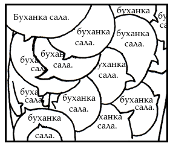
Глобальные переменные всегда начинаются с доллара:
$x = "буханка"
$y = "сала"Обычные переменные сидят в своих частях программы, как в домиках. В одном домике «папа» значит продавец, в другом — укротитель тигров. В каждом доме слово «папа» имеет свой смысл.
Но глобальные переменные всегда одни и те же, во всех домиках. Поэтому они и начинаются с доллара, ведь доллары в каждом доме уважают. Можно постучаться в любую дверь и дать денег — и все обрадуются, а вот если сказать «вам случайно укротитель тигров не нужен?» — то могут и не понять.
Если короче, глобальные переменные можно назначить в одном месте программы, а потом прочитать в любом другом месте.
Переменные–атрибуты всегда начинаются со знака @ (читается «ат», от слова «атрибут»):
@z = "Самая огромная буханка сала в мире"В переменные–атрибуты обычно записывают характеристики объектов. Например, если есть объект «дверь», его ширину можно записать в переменную @width.
Классные переменные–атрибуты всегда начинаются с двойного @@:
@@ladno = "Ладно, давайте сюда вашу буханку сала"Как и обычные переменные–атрибуты, классные переменные–атрибуты используются для хранения характеристик, только не одного объекта, а сразу многих. Если в атрибут @width мы записывали ширину конкретной двери, то в классный атрибут @@width мы запишем стандартную ширину всех стандартных дверей.
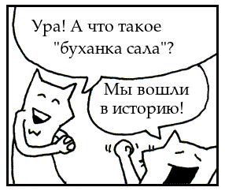
Блок — это кусок программы между двумя фигурными скобками:
2.times { print "Я, конечно, написал пример про буханку сала,
но это был первый и последний раз!" }Блок позволяет взять кусок логики, и передать его из одной части программы в другую. Фигурные скобки похожи на щипцы; они схватили кусок программы и не отпускают.
А ещё, блок похож на маленький красивый пенальчик с карандашами и резинками, с прозрачной крышечкой, сквозь которую видно, что внутри. Хотя пенальчики, пожалуй, красивее чем блоки…
Если блок получается на несколько строк, вместо фигурных скобок пишут do (делать) и end (конец):
loop do
print "О–о–о!"
print "Это ж гораздо лучше!"
print "А то от этих щипцов у меня уже спина начинала болеть."
endЕсли блоку нужны параметры, их пишут между двумя знаками «|», через запятую:
{ |x,y| x + y }Тут x,y — это параметры; после них идет кусок логики x + y, который считает их сумму.
Знаки «|», это как–бы два края детской горки, с которой едут параметры: x едет, растопырив руки и ноги, а скромная y — только руки. Параметры приходят сверху, садятся, и катятся прямо в блок!
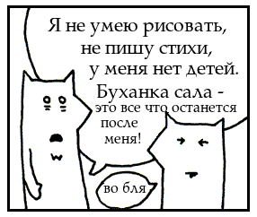
Отрезок выглядит так: первый элемент, две точки, последний элемент — и всё это в скобках:
(1..5) # в этот отрезок входят числа 1, 2, 3, 4 и 5.
('a'..'z') # этот отрезок содержит весь латинский алфавит, от «a» до «z».Мне отрезки напоминают сложенную гармошку: скобки это ручки, а две точки — это застежка. (Конечно, если всё время ходить с растянутой гармошкой, можно нереально натренировать самооценку, но иногда бывает полезно посомневаться в себе, и не выставлять свою «гармошку» нараспашку.)
Обычно отрезки пишутся с двумя точками, но ещё бывают с тремя — третья точка означает, что правый край отрезка не включается:
(0...5) # этот отрезок включает в себя числа 0, 1, 2, 3 и 4.Мы как бы немного приоткрыли гармошку, и она выпустила звук. Эта сбежавшая нотка и есть последний элемент отрезка. Наш подарок небесам.
Массив, это список элементов в квадратных скобках, через запятую:
[3, 1, 3, 2] # массив чисел
['куртка', 'варежки', 'сноуборд'] # массив строчекМассив похож на гусеницу при–стэпленную к программе. Каждый элемент — это секция брюшка, запятые — это ножки шевелятся, а квадратные скобки — это скрепки, чтобы она не убежала.
Жила–была одна гусеница, вместо ног у неё были запятые. Запятая — значит пауза, поэтому ей приходилось останавливаться после каждого шага. Остальные гусеницы её очень уважали, думали она взвешивает каждый шаг. В итоге она стала бизнес–леди, но не забыла нуждающихся, жертвовала им листики с дырочками.
Кстати, элементы массива не просто валяются в куче как попало, а всегда стоят один за другим, как их вначале поставили.
Хэш — это список пар «слово — значение», в фигурных скобках. В каждой паре «слово» и «значение» разделены псевдо–стрелочкой, составленной из знаков «равно» и «больше»:
{'мишка' => 'ведмедик', 'Кощей Бессмертный' => 'Кащик Невмерущий'}На этот раз, фигурные скобки, это, понарошку, маленькие словарики — видишь, как–бы маленькие раскрытые книжечки? На каждой страничке словаря — только одно слово и его перевод, а запятые, это понарошку уголки страниц:
{
'имя' => 'Петр Иваныч',
'профессия' => 'укротитель тигров',
'любимый музыкальный инструмент' => 'гармошка'
}Как видишь, в хэшах можно хранить не только словарные данные, а вообще любые пары значений. Что бы их было легче найти, они хранятся не по порядку списка, как в массиве, а по ключевым словам, как в словаре.
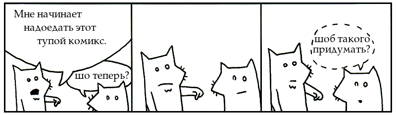
Регулярное выражение (сокращенно «рег–эксп») — это набор букв и хитрых кодов в косых скобках:
/руби/
/[0-9]+/
/^\d{3}-\d{3}-\d{4}/Регулярные выражения нужны, чтобы сканировать тексты на наличие слов и более сложных комбинаций символов.
Косые скобки — это как–бы две булавочки; посередине на полупрозрачном экранчике написана искомая комбинация букв. Держась за булавочки, ты водишь этой конструкцией над книгой, строчка за строчкой. Если комбинация букв на экранчике совпадает со словом в книге — экранчик начинает мигать. Тогда ты прикладываешь экранчик прямо к странице, и он подсвечивает найденное слово мягким желтым светом. Но когда булавки касаются поверхности бумаги, книге становится щекотно, и она чихает: «рег–эксп!»
Конечно, регулярные выражения работают намного быстрее, чем рука с волшебным экранчиком. С помощью рег–экспов можно легко и просто сканировать целые тома книг!
Вот список математических операций, логических операций и операций сравнения, имеющихся в языке Руби. Самые главные ты уже знаешь — сложение, вычитание, больше, меньше и так далее. Просмотри их наискосок:
** ! ~ * / % + - &
<< >> | ^ > >= < <= <=>
|| != =~ !~ && += -= == ===
.. ... not and orНекоторые слова в Руби наделены особым смыслом, поэтому их нельзя использовать как попало, например называть ими переменные и т. д. Штук пять из них ты уже встречала. Они, как говорится, охраняются законом. Только попробуй тронуть — и сразу получишь официальную синтаксическую ошибку!
alias and BEGIN begin break case class def defined
do else elsif END end ensure false for if
in module next nil not or redo rescue retry
return self super then true undef unless until when
while yieldВот такие они, уважаемые члены языка Руби. Из них мы с тобой и будем лепить наши хитрые, но душевные, программы на протяжении следующих трех глав. Рекомендую отлистать назад и бегло просмотреть весь список — сейчас я буду проверять, насколько хорошо ты их запомнила.
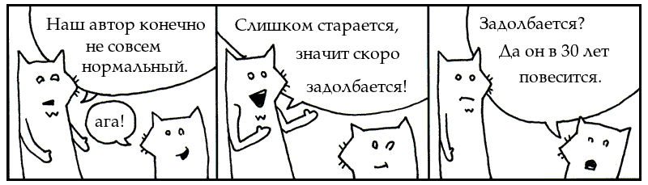
Ты — молодец! Просто умница!!! Я всем про тебя рассказываю, есть мол у меня одна читательница, не знаю откуда и как зовут, но она такая умница — читает и кликает, и читает и кликает… «Молодежь» — говорю — «эх, новое поколение» — говорю — «душевные люди! Я бы никогда… ы–ы–ы…» — мне даже слов не хватает!
У меня даже сердце так горит, что аж сквозь кожу просвечивает красным пятном. Прийдется вызывать скорую, чтобы вкололи мне 10 кубиков джаваскрипта, подругому я не успокоюсь.
Ага, ага. Вообщем, классно. Но теперь мне прийдется стать строгим и даже жестоким учителем, а тебе прийдется поднапрячься. Теперь, птичечка, тебе прийдется не только водить глазами туда–сюда (да–да–да, конечно я помню, как ты прекрасно читала вслух!), тебе прийдется еще и понимать написанное.
5.times { print "ведмедик" }Только, чур, не подглядывать в ответы! Закрой рукой этот параграф и подумай сама. Сначала идет число 5, потом метод .times, правильно? Дальше, первые щипцы — это начало блока. Дальше, ядерный метод print, который можно вызывать без точки, и его параметр — строчка "ведмедик". Заканчивается всё щипцами, закрывающими блок.
exit unless "мишутка".include? "утка"В начале exit, как и print в прошлом примере, это тоже ядерный метод. За ним unless — это ключевое слово, если ты внимательно читала список ключевых слов, ты его узнаешь. Дальше "мишутка" — это строчка, к ней прилеплен метод include? и в конце снова строчка — "утка".
['хлеб', 'сыр', 'колбаса'].each { |word| print word.capitalize }Гусеница с бутербродом в животе — это массив, в нём три строчки: 'хлеб', 'сыр' и 'колбаса'. Сразу после массива идёт метод each, а после него — блок.
Внутри блока, параметр word, едет с горки прямо в блок и становится переменной. Дальше, ядерный метод print с параметром word.capitalize, состоящим из переменной word и метода capitalize.
Разбери все три примера ещё раз и постарайся опознать каждую часть речи. У каждой из них есть особая примета, правда ж? Теперь, усядься поудобнее и соберись с мыслями. Сейчас мы будем разбирать нереально огромную программу.
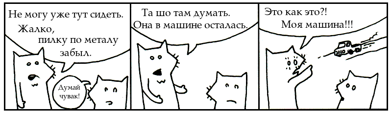
require 'net/http'
Net::HTTP.start( 'www.ruby-lang.org', 80 ) do |http|
print( http.get( '/en/index.html' ).body )
endВ первой строке вызывается метод require, в него передаётся строчка 'net/http'. Продолжая нашу литературную аналогию, первая строка — это как бы одно предложение. В нём мы просим (вернее, требуем — англ. «require») Руби загрузить библиотечку готового кода, под названием Net::HTTP.
Остальные три строки — это одно предложение. Константа Net:HTTP — это библиотечка, которую мы только что загрузили. Из этой библиотечки мы используем метод start. В него мы передаём строчку 'www.ruby-lang.org' и число 80.
Ключевое слово do — это начало блока. В блок передаётся один параметр — переменная http. Внутри блока вызывается метод print. Но что же он печатает?
У переменной http вызывается метод get (рус. «достать»), в него мы передаём строчку с путём '/en/index.html' Дальше, к методу get прицеплена еще одна камера — метод body (рус. «тело»). Блок заканчивается ключевым словом end.
Пока держишься? Ну что, попробуешь догадаться, что делает программа, чисто для интереса? Надеюсь, начинают вырисовываться какие–то контуры? Если нет, попробуй потрясти головой — может кусочки программы разложатся по полочкам?
Например, такую комбинацию мы уже встречали много раз:
переменная . метод ( параметры для метода )
В нашем примере она выглядит так:
http.get( '/en/index.html' )Этот кусок достаёт (англ. «get») веб–страницу с сайта. Знаешь, как в интернет–браузере, «http://www» и всё такое. HTTP расшифровывается «Hyper–Text Transfer Protocol» (рус. «Протокол для передачи гипер–текста»). То есть HTTP это то, с помощью чего передаются веб–страницы между веб–сервером и интернет–браузером.
Представь себе водителя, который ездит по интернету туда–сюда и развозит веб–страницы. У него на бейсболке написано — «HTTP». Переменная http это водитель. Метод get — это задание водителю: поехать и достать веб–страницу под названием /en/index.html.
Зная всё это, становится понятно, что цепочка из двух методов http.get( '/en/index.html' ).body фактически означает веб—страничка.body
И поэтому этот кусок
print( http.get( '/en/index.html' ).body )…этот кусок сначала достаёт веб–страничку, потом мы просим страничку выдать нам body, т.е. «тело» веб–страницы в виде строчки содержащей HTML-код. И потом мы эту строчку печатаем! Ну что, понятно теперь, как цепочки методов работают? В следующей главе у нас их будет целая куча. Тебе понравится!
Итак, что делает вся программа? Она печатает на экран HTML–код заглавной страницы сайта про Руби — при помощи специально обученного веб–водилы :^)
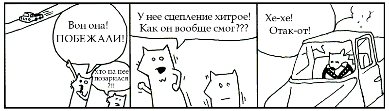
Кажется у нас небольшая проблемa… У меня такое чувство, что тебе понравилось, даже очень… А ведь мы ещё даже не дошли до считалочек про XML!
Если тебе правда такое нравится, значит всё, хана! — через пару глав ты сможешь писать собственные программы. (Кстати, как раз через две главы я собираюсь показать тебе как запрограммировать свою собственную ролевую игру, файло–обменную сеть типа Бит–торрента, и программу для скачивания из сети настоящих случайных чисел!)
Научно доказаная офигенность
Ты, наверное, уже догадываешься (во всяком случае я должен тебя предупредить) что всё пропало. Сначала ты перестанешь гулять с собакой. Она будет крутится возле двери, проситься — но твои глазки будут пожирать программу, а твои пальчики будут настукивать команды компу.
Потом начнут ломаться вещи. Вентиляция забъётся распечатками програм. Сдохнет кондик. Накопятся горы мусора: коробки от пицы (некогда готовить), бесплатные рекламные рассылки (некогда выкидывать). В квартире будет пахнуть немытым телом. Плинтуса покроются мхом, забъётся канализация, сквозь дыры в стенах залезут звери, сквозь пол прорастут деревья.
Зато комп будет в полном порядке — питаемый твоим, птичечка, вниманием. За сотни лет сидения за компом ты и сама станешь наполовину машиной, а комп станет наполовину человеком. Твои руки будут подключаться прямо в USB, глаза — прямо в DVI. Лёгкие будут охлаждать процессор, вместо вентилятора.
Но за 5 минут до того как квартира уже вот–вот рухнет тебе на голову, и джунгли поглотят тебя вместе с компом, ты допишешь программу. И вы с компом вместе, затаив дыхание запустите этот продукт безумных ночей. И она, эта программа, тут–же запустит автоматические пилы, подстрижёт деревья, и растопит камин. Нано–роботы выбегут из программы и сделают евроремонт, положат новую плитку, переклеят обои, переполируют мебель, передизинфецируют унитазы. Ловко–рукие андроиды поставят колонны, укрепят потолок, высекут из мрамора статуи. И ты станешь полноправной хозяйкой этого дворца, и всех окружающих владений, гор, и островов!
Короче, в конце концов всё будет хорошо. Так что, начинаем писать такую программу или ну её?